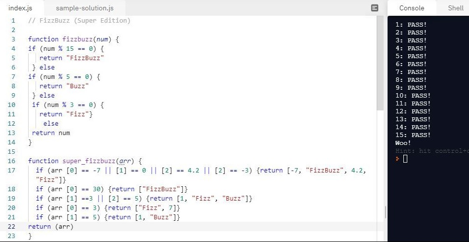

Well, I guess like many of us I got defeated by this “Terahs spouses spouse property should refer back to the Terah.” I think when you look at this for the first time it just melts your brain. I have asked my wife and my friends what they understand from it. Unsuccessfully After that I broke down the whole sentence to smaller pieces and analysed every single word. After too much time I have realised that the answer is simple. I felt proud and dumb at the same time. This lesson thought me that some problems look really complicated but they are very trivial and if I would just read that text more carefully the solution would come up very quickly.
I do not know if that was elegant, but I have written the code for Super FIzzBuzz challenge the way that it passed the checks although it wasn’t really what has been expected. I felt very satisfied when I saw my code completed the challenge. The task was to write a function that will return Fizz, Buzz or FizzBuzz depending on the array we are getting. That function should correctly solve all the arrays that were given by the test. I have applied if statement to each case individually base on error messages I was getting. I have learned that there are many ways to write the code which in certain conditions will work.

I have not used it yet but I will when the code gets complicated and when working with others so they can understand my code.
Trying is one of the best things to do. You can see what you are writing and quickly identify the errors.
Have not really used this one it does not appeal to me. Maybe will try in the future some modified method of it.
Error messages quite often look like something written in another language that I do not understand. But if I look closely, they contain useful information that gives me a hint where the problem is and narrows down the area of it.
I am still discovering new usages of it. Console is a great tool to debug the code. I want to use it more but for now I need to get more skills in JS to use it as intended.
This is my primary tool to solve the problems I encounter. With over 7 billion people around the globe there is high chance that someone already had that issue and successfully solved it. Why not to use it then?
Must improve on this one :D!
Asking coaches is I usually the final option to find the solution. It’s very likely that they have seen people doing the same mistake and something that I can’t see from my perspective they can identify and give me some hints how to approach the problem.
Reflection is a form of analysis which is crucial skill to solve the problem. It is also powerful tool to analyse your actions that help you identify potential room for improvement.